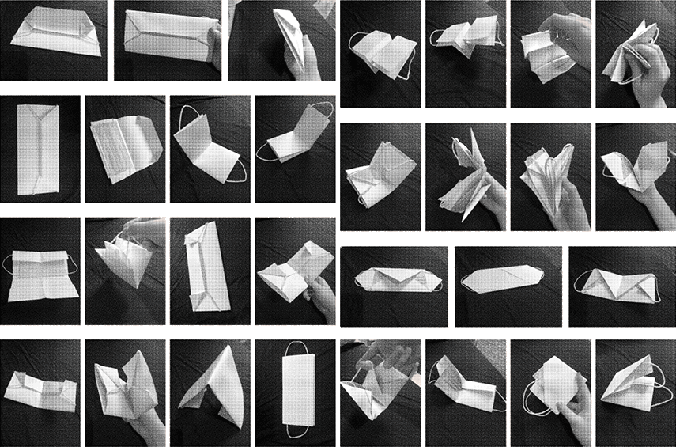

Celeste
A weekly reusable mask and pouch set (subtitle change)
Observations
Looking at my own behaviour during this pandemic, I realize I am not exactly practicing what I preach. I
know that I should not touch the mask, only the straps, yet I move it around constantly without really
considering the consequences. I know that a disposable mask should either be disposed of after one use
or should be left unworn for a few days until possible viruses have died, yet I have disposable masks in
the pockets of my coats that I keep wearing because I just forget to bring new ones.
A big problem with proper mask usage is inconvenience and lack of immediate feedback. When I'm rushing
for my train I just grab my mask without much thought, and when I've arrived at my destination I just
put it in my pocket because I don't have a dedicated place for storing it. But I also put my
(possibly virus-covered) hands in those same pockets, which defeats the purpose of protecting me from
breathing in viruses.
Storing your mask safely should be made very convenient and visible. To yourself, but also to
others around you: a good example and visual but non-intrusive reminder to properly store your mask in
between short bus trips and shop visits. Face masks are a symbol of the times we live in now and they
call for more consciousness in their handling.
The original case was focused on battling the littering of disposable face masks. We believe we can
change this by stimulating conscious handling of face masks in a non intrusive way.
Concept
Celeste is a reusable pouch and mask set consisting of 7 masks and 7 pouches for every day of the week.
Celeste is a constant reminder to the wearer to be more mindful of their actions, and to increase
awareness in the handling of our face masks. Reckless face mask handling is something many of us are
guilty of; this same carelessness is why they are littered as well. In fighting viruses, however, this
action completely undermines the effectiveness of the masks. This ‘negative’ ritual I like to call it
must be transformed into a positive, conscious way of doing things. So Celeste is both the name of the
physical set and the concept of the ritual behind it. We will get to why it’s called Celeste in a
moment.
With the mask pouches the life of both disposable masks and washable masks can be extended. A disposable
mask can be worn again after 72 hours at the earliest, as viruses only survive for a short time on
textile surfaces. To make our ritual easier to interweave with our natural rhythms, we have opted for an
interval of 7 days: a different mask and pouch for each day of the week. The prints for each set are
based on the planets that the days of the week refer to. This is where the name stems from, and it’s
where the astronomer (Erika) meets the designer (Michelle) in our collaboration.
The practical goal of this project is extending the lifespan of existing masks, disposable or not, by
storing them safely, and letting them ventilate properly in their own (washable) bag. As a consequence
of extending the masks life, we also hope to counter littering as a two-in-one solution. We want to
create awareness in how we handle our masks.
In a more artistic/poetic sense, this project is about creating new rituals in current COVID times.
Process
The idea from the pouches started with this series of paper pouches that I folded from basic A4 paper. Here the main idea was that anyone could fold themselves a quick nice mask pouch. After discussing our progress with Ingeborg however, she advised us that we have to take into consideration that people are less worried about littering if a material is considered cheap. We also considered biodegradable materials to make our product more circular, but it’s not always better if you need something long lasting. We learned that in the Netherlands we don’t have the systems in place for degradable materials like banana leaves.
For our second iteration we decided to continue with fabric, both because this is the material I am most familiar with as a fashion designer, and because we felt it would give a more appealing feel to the pouches, so people wouldn’ want to throw them away. We also needed a way to distinguish between the different pouches for the different days, so before we came up with the planetary concept, we tried some colorful gradients. I used the sublimation printer at my work to print on polyester fabric.
Print development
For the final prototypes Erika came up with the idea of using planets to distinguish between the days. I used the planets to generate new gradients using Adobe Color, and used these to make prints for the masks and for the pouches.


Final pouches
The end result is a collection of seven design proposals for masks and pouches, and an investigation into wearing them. The designs are based on simple folding principles and inspired by the face mask patterns that we've come across. The designs were created intuitively by just starting to create, creating a loosely coherent collection, connected by the prints and principles.